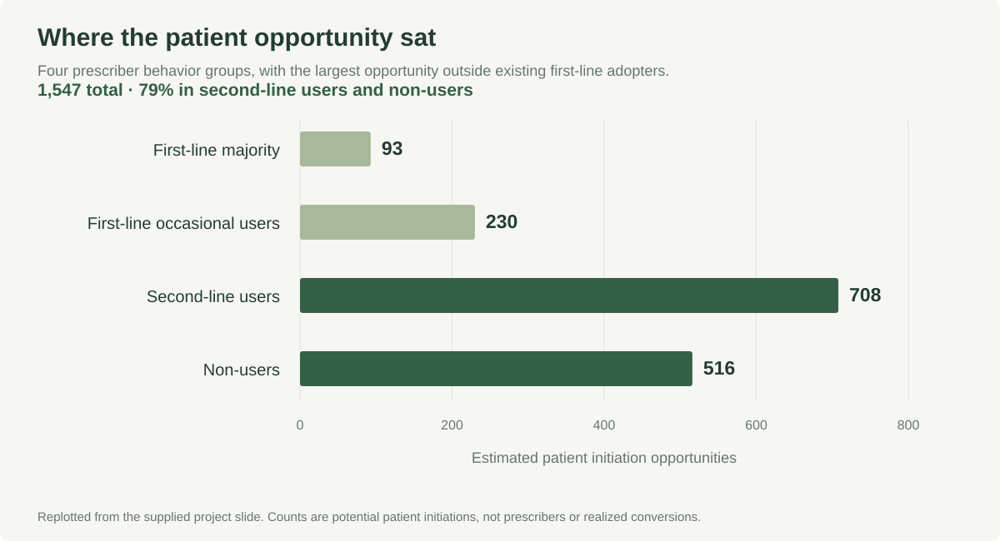
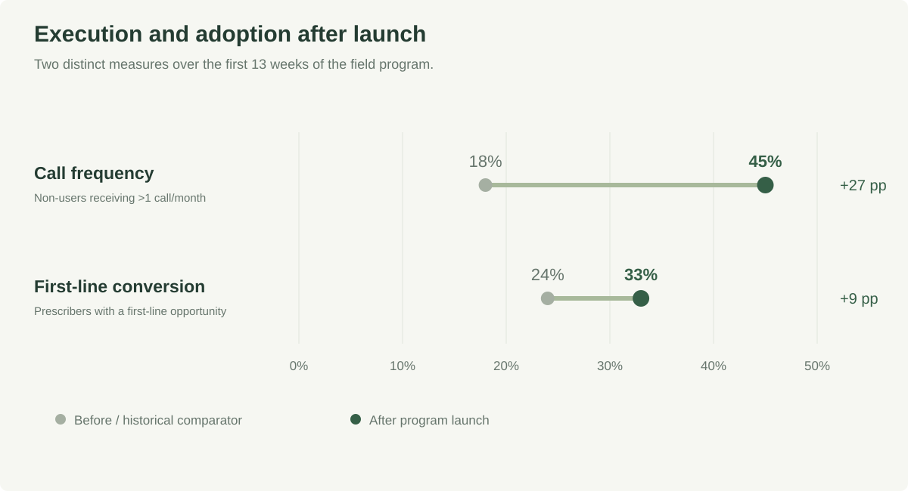

Finding the next opportunity for a hematology brand
An interpretable segmentation for a hematology brand expanding into first-line treatment.
A simple segmentation became an actionable targeting plan. The follow-on program recorded 33% conversion versus a 24% historical baseline.

Anonymized professional case study. The brand, product, internal tools and source screenshots are omitted. Charts are replotted from verified project-slide values using generic labels.
The question
A hematology brand with an established second-line role received a first-line indication. The commercial team needed to understand which prescribers were already adopting it earlier in treatment and where awareness or established treatment habits were limiting adoption.
I owned the analytics workstream across segmentation, targeting measurement, a competitive readout and ad hoc brand questions.
Narrow the universe before choosing a model
From roughly 9,400 prescribers, the analysis focused on about 3,500 first-line initiators in the relevant launch window. I used two measures the commercial team already understood: the brand’s first-line new-prescription share and its usage across treatment lines.
In the opportunity breakdown above, second-line users and non-users account for 1,224 of 1,547 estimated patient opportunities, about 79%. An unsegmented prescriber bucket remained outside the four behavior groups.
The resulting groups were first-line majority, first-line occasional users, second-line users and non-users. The opportunity-sizing exercise identified approximately 1,500 potential patient initiations, conditional on treatment and adoption assumptions. The unit of opportunity was a potential patient initiation.
Why I chose rules over clustering
The first decision was operational: field teams needed to understand and explain a segment quickly. A two-measure framework made it possible to connect each segment to a different conversation and preserve a clear reason for prioritizing a prescriber.
The segment definitions remained explicit, so commercial stakeholders could inspect the logic and connect it to field actions.
Turn the framework into an intervention
I partnered with Marketing on differentiated messaging and with field and execution teams on a follow-on targeting program. Approximately 1,000 prescribers were prioritized, concentrated in second-line users and non-users, with a plan for four calls over three months.
The targeting list was tracked through an internal field tool. Measurement connected execution, such as call frequency, to subsequent first-line initiation.
Measure the result without overstating it

In the first 13 weeks, non-users receiving more than one call per month rose from 18% to 45%. Conversion among targeted prescribers with a first-line opportunity was 33%, versus a 24% historical baseline: a 9 percentage point observed difference.
This was a comparison against historical performance, not a randomized experiment or matched-cohort estimate. Market changes, competitive activity and selection into targeting could contribute to the difference. The result is directional evidence, not a clean causal effect.
What I would improve
I would define a contemporaneous comparison group before launch, document eligibility and outcome windows, and assess pre-intervention trends. A geographic holdout or carefully matched control could strengthen the measurement if operational constraints allowed it.
The durable lesson was that a transparent framework can connect analysis to execution. The quality of the measurement determines how confidently we can judge the resulting business outcome.